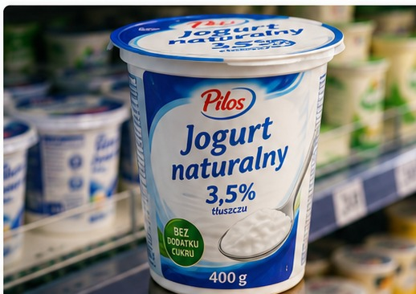

◈ Skład produktu
Mleko pasteryzowane, żywe kultury bakterii jogurtowych.
⚠ Alergeny
Zawiera mleko.
Zawiera mleko.
Przykładowy skład demonstracyjny. Sprawdź etykietę kupowanego produktu.

Klasyczny jogurt naturalny z mleka i żywych kultur bakterii. Sprawdź skład, wartości odżywcze, pochodzenie surowców i przykładowy ślad węglowy.
*To przykładowa karta produktu — sprawdź dane na opakowaniu konkretnego producenta.
Mleko pasteryzowane, żywe kultury bakterii jogurtowych.
Przykładowy skład demonstracyjny. Sprawdź etykietę kupowanego produktu.
| Wartość | Na 100 g | Na 400 g |
|---|---|---|
| Energia | 268 kJ / 64 kcal | 1072 kJ / 256 kcal |
| Tłuszcz | 3,6 g | 14,4 g |
| w tym nasycone | 2,3 g | 9,2 g |
| Węglowodany | 4,7 g | 18,8 g |
| w tym cukry | 4,7 g | 18,8 g |
| Białko | 3,5 g | 14,0 g |
| Sól | 0,1 g | 0,4 g |
| Wapń | 120 mg | 480 mg |
Wartości przykładowe, nie są deklaracją producenta.
Przykładowy wynik demonstracyjny.
Prosty skład
Typowy jogurt naturalny nie musi zawierać barwników ani konserwantów. Sprawdź listę składników konkretnego produktu.
Przykładowe dane na 100 g i na opakowanie 400 g znajdują się w tabeli w sekcji „Informacje ogólne”.
Porównaj je z etykietą wybranego produktu.
Przykładowy skład: mleko pasteryzowane, żywe kultury bakterii jogurtowych.
Skład może różnić się zależnie od marki.
Przykładowy łańcuch: gospodarstwo mleczne → mleczarnia → pakowanie → sklep.
Nie jest to potwierdzone pochodzenie konkretnego produktu.
Wartość demonstracyjna, niezweryfikowana analiza cyklu życia konkretnego produktu.
Jogurt naturalny często ma krótki skład i nie wymaga dodatku barwników ani aromatów.
Sprawdź skład konkretnego opakowania.